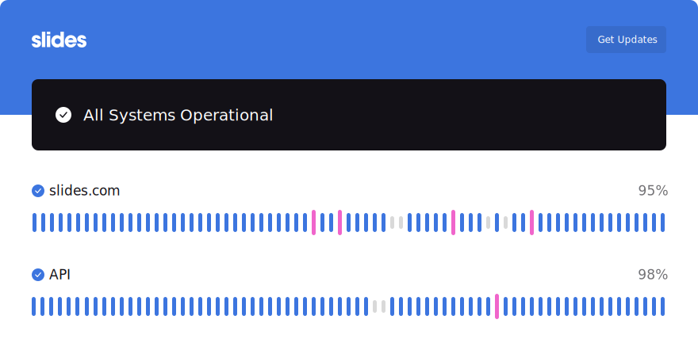
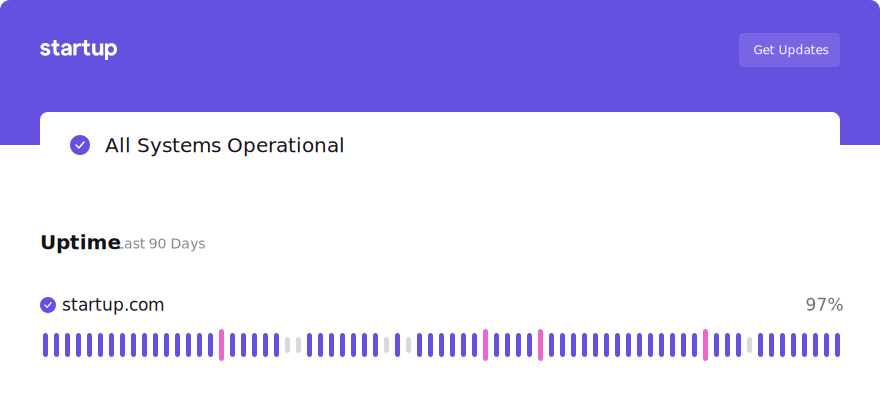
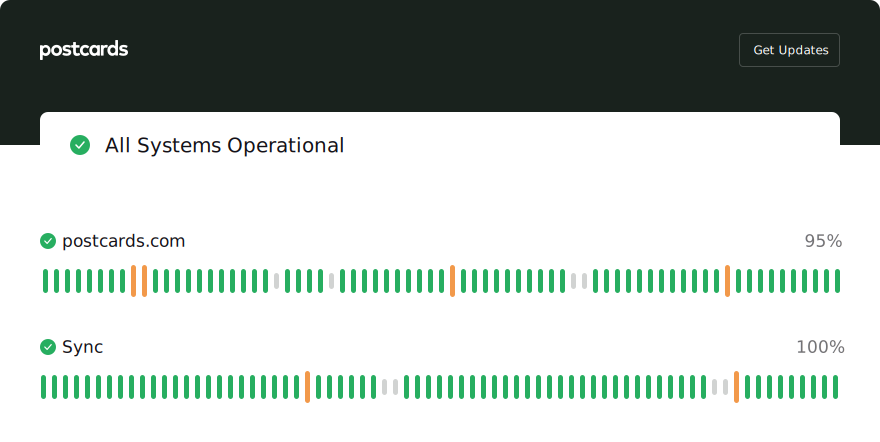

Make it yours with
personalized Status Pages
Event History
View history of previous events.
Custom Domain
Replace the Pulsetic link with your domain.
Custom Design
Dark or light, green or red - it’s up to you.


